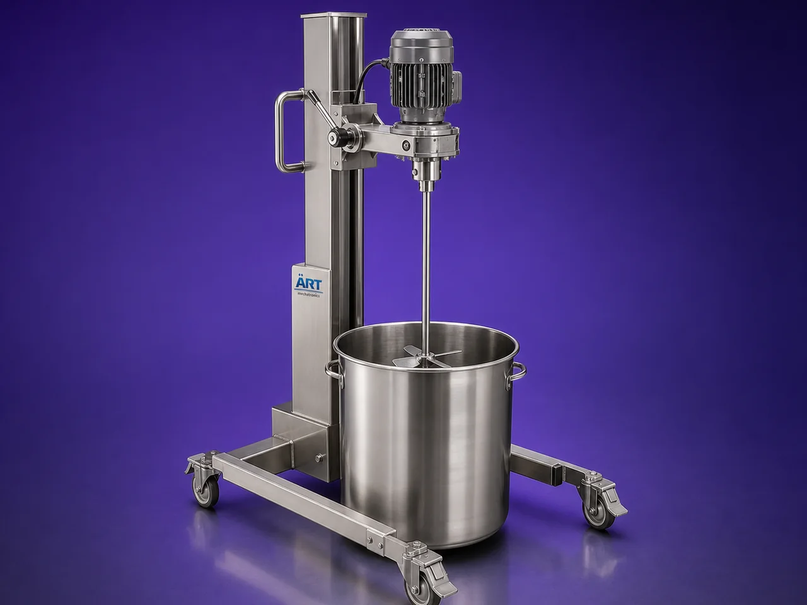

Stirrer Machine (Industrial Liquid Mixing & Agitation System)
A Stirrer Machine, also known as an Industrial Stirrer, Liquid Agitator, or Mixing Stirrer System, is a widely used industrial mixing equipment designed for stirring, blending, dissolving, homogenizing, emulsifying, and circulating liquid or semi-liquid materials.

About the Stirrer Machine
The machine uses a motor-driven rotating shaft fitted with specially designed stirring blades or impellers, which create controlled fluid movement inside tanks or vessels to ensure:
- Uniform liquid mixing
- Proper material circulation
- Consistent product quality
- Efficient dissolution and blending
Stirrer machines are extensively used in industries such as:
• Chemicals
• Pharmaceuticals
• Food processing
• Paints & coatings
• Cosmetics
• Adhesives
• Water treatment
• Detergents
• Dairy & beverages
where continuous liquid agitation and homogeneous blending are critical.
The machine is suitable for:
- Liquid mixing
- Chemical stirring
- Slurry preparation
- Paint blending
- Syrup mixing
- Emulsification
- Suspension preparation
ART Mechatronics offers high-performance industrial stirrer machines, engineered for efficient agitation, heavy-duty operation, hygienic processing, and reliable industrial performance.
One machine, many names
Buyers search for this equipment under many terms — we manufacture all of them:
Working Principle of Stirrer Machine
Ensures uniform liquid mixing and agitation
helps in proper blending and homogenization
Types of Stirrer Machines
Industries Using Stirrer Machine
⚗️ Chemical Industry
- Chemical blending and reaction processing
💊 Pharmaceutical Industry
- Syrup and liquid medicine mixing
🍃 Food Processing Industry
- Sauce and liquid food blending
🎨 Paint & Coating Industry
- Pigment and paint agitation
💄 Cosmetic Industry
- Cream and lotion mixing
🧼 Detergent Industry
- Liquid detergent blending
💧 Water Treatment Industry
- Chemical dosing and mixing
Features & Advantages
- Efficient liquid mixing and agitation
- Uniform blending and circulation
- Suitable for continuous operation
- Prevents settling and separation
- Heavy-duty industrial construction
- Multiple impeller and agitator designs available
- Hygienic and easy-to-clean system
- Low maintenance requirement
- Energy-efficient operation
Technical Highlights
- Capacity: Small laboratory to large industrial tanks
- Construction: Stainless Steel / Mild Steel
- Agitator Type:
- Propeller
- Turbine
- Paddle
- Anchor
- Speed: Fixed / variable speed
- Mounting Type:
- Top entry
- Bottom entry
- Side entry
- Operation: Manual / Automatic / PLC-based
Turnkey Stirring Solutions
ART Mechatronics offers:
- Complete stirrer system design
- Jacketed tank integration
- Heating and cooling systems
- Automation and control solutions
- Installation & commissioning
- After-sales service & AMC
Why Choose Art Mechatronics
- Expertise in industrial liquid mixing systems
- Customized solutions for multiple industries
- Heavy-duty and reliable machine designs
- Hygienic and energy-efficient construction
- Proven industrial performance
Applications
- Chemical Processing Plants
- Pharmaceutical Manufacturing Units
- Food Processing Industries
- Paint & Coating Industries
- Cosmetic Manufacturing Units
- Water Treatment Plants
Related Mixing & Blending machines
Get pricing & specs for the Stirrer Machine
Share the product, target capacity, current process and plant location. These details help our engineers discuss the right machine or line configuration.
One partner, from design to start-up
ART Mechatronics designs, manufactures, installs and commissions your Stirrer Machine solution with regional presence in India, UAE and Thailand.